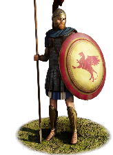
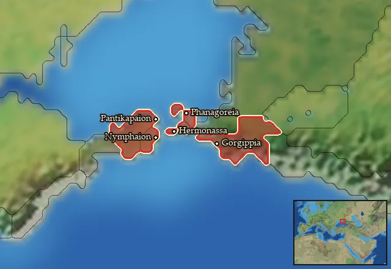

RTR: Imperium Surrectum
RTR: Imperium SurrectumBosporan Hoplites


Class: spearmen · Category: infantry · Men per unit: 40
Description
These warriors are the Greek citizens of the cities of the Bosporan Kingdom on the northeastern shores of the Black Sea. Armed with spear and sword (machaira or xiphos) as well as bronzed over Aspis shields, they can fight in the classic hoplite phalanx. Bronze greaves as well as scale-reinforced linothorakes, chainmail shirts or bronze muscle cuirasses, alongside Chalcidian or Pseudo-Phrygian helmets, afford them good protection in melee and against ranged attacks. Drawn from the property owning classes of the poleis of the remote north, these men proudly fight for their families and their home.
Historical background
As elsewhere in the Greek world, the citizens of the cities on the Kimmerian Bosporus long fought as hoplites. Bosporan hoplites are safely attested by the material evidence (see below), and also mentioned in the literary accounts, i.e. the descriptions of the Theodosian War in the 2nd quarter of the 4th century BC, when the Bosporans eventually overcame Theodosia and its allies Herakleia Pontike and Chersonesos (Polyaen. 6.9.4). The symbolic value of the hoplite is also shown by a headstone with the image of two hoplites who do not wear any body armour, apart from their classical Corinthian helmets – traditionally associated with Athena and the victories in the Greco-Persian Wars. The piece, now in the Pushkin Museum (as KP-374525. F-1601), was originally erected in the 4th century BC, but later reused as part of a building in the 1st century BC! Hoplite art was apparently still fashionable in this period. Another century later, a coin of king Rheskuporis I (r. ca. 69-93 AD) that honours his late father Kotys I (r. ca. 48-69 AD) depicts lance, spear, roundshield, helmet, and a war axe as the weapons of the Bosporan kings, all besides a trophy (MacDonald, Kingdom of the Bosporus (2005), no. 354). Aside from axe and (cavalry) lance, this, too, is typical hoplite equipment, and its appearance on a celebratory coin demonstrates how important the image of the hoplite and the service of the Greek citizens in the royal army remained throughout Bosporan history.
Fittingly, the equipment of the Bosporan warriors was rather classical. Iron spearheads (and buttspikes) that would have been attached to a dory, the hoplite spear, have been found everywhere in the territory of the Bosporan Kingdom (Mielczarek, Bosporan Army (1999), pp. 47-48). Besides their main weapon, Bosporan Hoplites would use the curved machaira sword (or, less often, the straight xiphos), which was widespread in the Bosporan army (Mielczarek (1999), pp. 46-47). The burial of a warrior in a tomb alongside the road to Noyvi Karantin (Karantinno shosse), dated to the early 3rd century BC, contained such swords and the remains of a bronzed over, round Aspis shield (Spasskii, G., Bospor Kimmeriiskii (1846), pp. 132-134). In Kerch, the ancient Pantikapaion, many bronze greaves were found, which protected the legs of the hoplites (Mielczarek (1999), pp. 53-54). A stele from the 4th or 3rd century BC accordingly depicts a soldier wearing greaves, an aspis, and three spears (idem, p. 53). Slightly atypical was their body armour: chainmail was widely available in the Bosporan Kingdom from the 3rd century BC onwards (Mielczarek (1999), pp. 52-53) and linothorakes were sometimes scale-reinforced, as scales were a standard Scythian armour (Cunliffe, The Scythians (2019), pp. 155, 248, and 252). Though no muscle cuirasses were found in the archaeological record (Mielczarek (1999), pp. 52-53), a few of these soldiers wear them as a nod to imports from Greece, where Athens was the kingdom’s most important trade partner (Engen, Honor and Profit. Athenian Trade Policy and the Economy and Society of Greece, 415-307 B.C.E (2010), pp. 98-100). Finally, the helmets of the hoplites are usually of the Chalcidian type. In Maiotis and Sindia, in the eastern part of the Bosporan Kingdom, fragments of these helmets have been found (Symonenko, Sarmatian age helmets (2015), p. 296), while more complete pieces were buried in the 4th century BC in the kurgan of Kurdzhsips on the Kuban (Rabinovich, Shlemy skifskogo perioda (1941), p. 144). Others wear what some call Thracoboiotian or Phrygoboiotian helmets, others Boioto-Konos helmets (Mielczarek (1999), p. 77). A few of these, too, may have been traded or imported, and reflect the various influences of Ionians, Dorians, Sarmatians, Scythians, and Thracians on the Bosporan military forces.
Stats
| Rank in roster | Rank in roster | Rank in roster | Rank in roster | ||||||||
|---|---|---|---|---|---|---|---|---|---|---|---|
| Men per unit | 40 | ███······· 31% | Attack | 9 | █········· 14% | Charge bonus | 14 | ██████···· 59% | Defence | 43 | ████████·· 83% |
| · armour | 12 | ███████··· 71% | · defence skill | 26 | ████████·· 78% | · shield | 5 | ██████···· 58% | Morale | 10 | ███······· 30% |
| Discipline | Low | Training | Highly trained | Recruitment cost | 1,708 dn | ███······· 32% | Upkeep per turn | 625 dn | █████····· 48% | ||
| Turns to recruit | 2 |
Weapons
| Primary | Secondary | Primary | Secondary | Primary | Secondary | Primary | Secondary | ||||
|---|---|---|---|---|---|---|---|---|---|---|---|
| Attack | 9 | — | Charge bonus | 14 | — | Type | melee · blade | — | Damage | piercing | — |
| Properties | Light spear (braced against cavalry charges from the front) · +8 attack against cavalry | — |
Defence
| Primary | Secondary | Primary | Secondary | Primary | Secondary | Primary | Secondary | ||||
|---|---|---|---|---|---|---|---|---|---|---|---|
| Total | 43 | — | Armour | 12 | — | Defence skill | 26 | — | Shield | 5 | — |
Condition and terrain
| Hit points | 1 | Ground: scrub / sand / forest / snow | -1 / -1 / -4 / -1 | Charge distance | 30 | Formations | Square |
Technical stats
| Time between blows (primary / secondary) | 2.5 s / — | Extra fatigue in hot climates | 3 | Collision mass per man (1.0 is normal) | 1.28 | Spacing between men: close / loose | 1 × 1.05 m / 2 × 2.4 m |
| Default ranks | 5 |
In battle: Can hide in long grass · Can sap · Very good stamina
Who can recruit it
A core roster unit for one faction, which can raise it anywhere it holds the right building:
Any faction holding one of the provinces below can field it.
Exactly what a settlement must have, route by route (4)
| Building | Also requires | Building | Also requires | Building | Also requires | Building | Also requires |
|---|---|---|---|---|---|---|---|
| Any settlement | Garrison Building or Tier 1 Military Industrial Complex · Bosporan area of recruitment · Any Government (Dependency, Indirect Rule or Direct Rule) · Tier 2 Colony not built | Indirect Rule | Garrison Building or Tier 1 Military Industrial Complex · Tier 1 Colony | Direct Rule | Garrison Building or Tier 1 Military Industrial Complex · Tier 1 Colony | Homeland | Garrison Building or Tier 1 Military Industrial Complex |
Areas of recruitment

| Zone | Provinces | ||||||
|---|---|---|---|---|---|---|---|
| Bosporan | 5 |